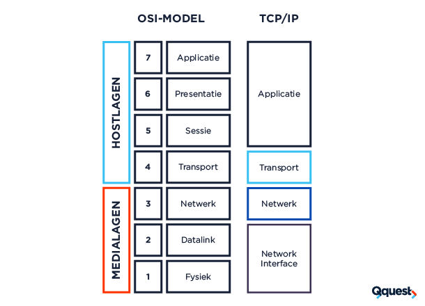

De toepassingslaag is de bovenste laag in het OSI-model en gaat over de programma's en applicaties die je gebruikt om met netwerken te communiceren.
De toepassingen laag zorgt voor: Toegang tot netwerkservices: Het zorgt ervoor dat programma's zoals je webbrowser of e-mail kunnen communiceren over het netwerk. Protocollen: Het gebruikt specifieke regels (zoals HTTP voor webpagina’s of SMTP voor e-mail) om data te versturen en ontvangen. Interactie met gebruikers: Het biedt de interface tussen de gebruiker en het netwerk (denk aan de schermen en knoppen die je ziet in apps).
Kortom, de toepassingen laag zorgt ervoor dat jij met netwerken kunt werken via de apps en programma’s die je gebruikt.
